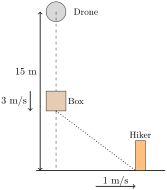

1.
A rescue drone is hovering 15 meters above the ground and is lowering a supply box to a hiker using a rope. The rope is released (vertically) at a constant rate of 3 meters per second. At the moment the box is released, the hiker is walking away from the point directly beneath the drone at a speed of 1 meter per second. When the box is 3 meters above the ground, how fast is the distance between the supply box and the hiker changing?
Answer.
Let \(x(t)\) denote the distance of the hiker from a point directly below the drone at time \(t\text{.}\) Let \(y(t)\) denote the height of the box at time \(t\text{.}\)
Known: \(\displaystyle \frac{dy}{dt} = -3 \ \frac{m}{sec}, \frac{dx}{dt} = 1 \ \frac{m}{sec}\)
We find: \(\displaystyle \frac{dz}{dt}\) when \(y(t)=3\) meters (\(t=4\) seconds)
But
\begin{equation*}
x(t)^2 + y(t)^2 = z(t)^2
\end{equation*}
so that
\begin{equation*}
2x(t)\frac{dx}{dt} + 2y(t)\frac{dy}{dt} = 2z(t)\frac{dz}{dt}
\end{equation*}
and thus
\begin{align*}
\frac{dz}{dt}\vert_{y=3} \mathstrut \amp = \frac{x(t) \frac{dx}{dt} + y(t) \frac{dy}{dt}}{z(t)}\vert_{y=3} \\
\amp = \frac{ (4 \ m)(1 \ \frac{m}{sec}) + (3 \ m)(-3 \ \frac{m}{sec})}{5 \ m} \\
\amp = -1 \ \frac{m}{sec}
\end{align*}